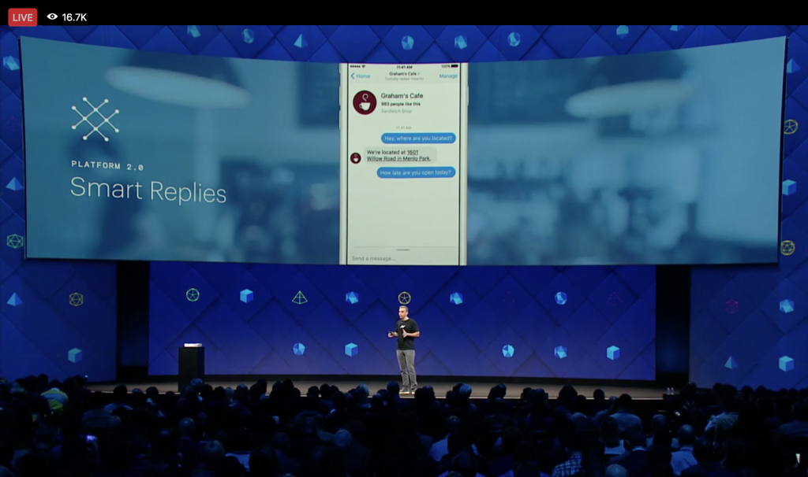
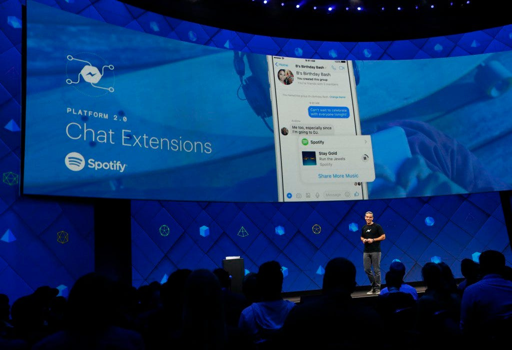
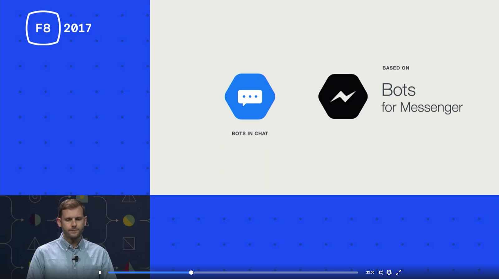
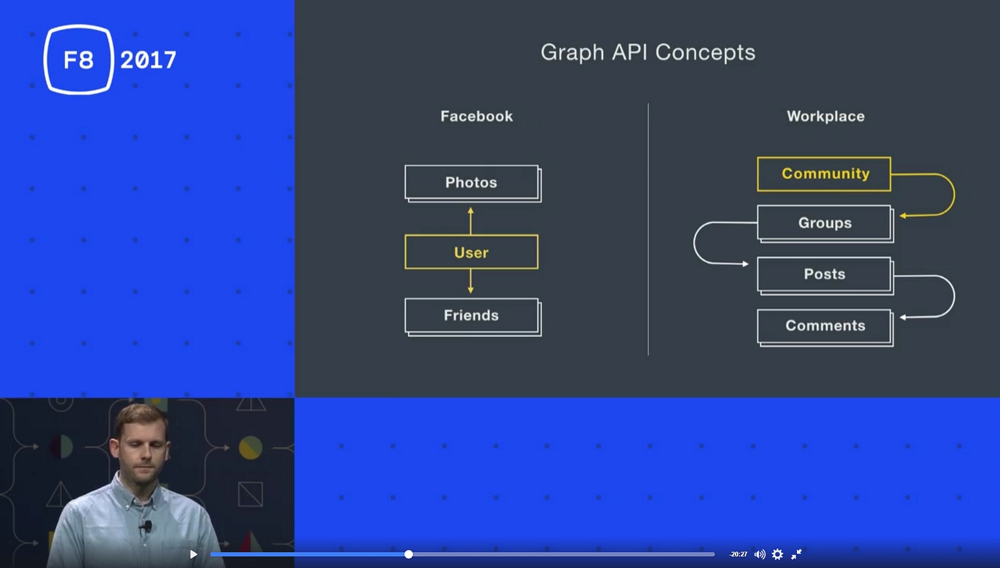
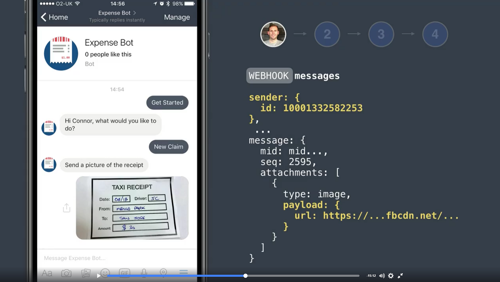
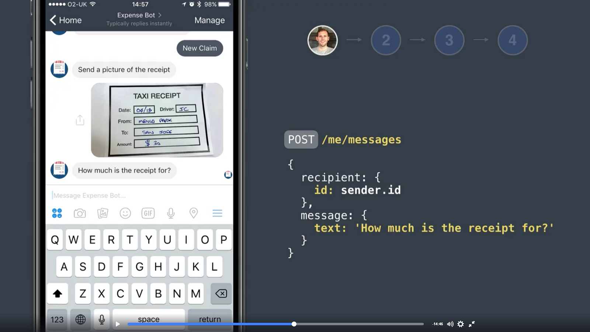

What didn’t happen at #F8F2017
Cosa non è successo alla Facebook Developers Conference 2017


Qui sotto qualche riflessione a caldo sulle “novità” introdotte all’evento.
- riporto mia risposta all’articolo Facebook is killing off WhatsApp
- riporto video di talk su nuovo prodotto Workplace e bot-integrazioni
Hi Andrew Maher, good points in your story!
Here my thoughts about #F82017, specifically trying to answer your questions. BTW, I'm focused on chatbot development (and conversational UX design) and I confess in advance: for me #F82017 news&updates have been a disappointment.
Let’s face it: one of more awaited announce was:
WhatsApp Chatbots! But none of this has happened.
I don’t really know the reasons WhatsApp have been put aside from the Messenger new “games”, nevertheless it seems to me that you are right when you say:
Facebook has stopped innovating with WhatsApp
Reason why are almost mystery for me:
- From the tech side:
To integrate/extend the Messenger Bot Platform to WhatsApp does not seem a gigantic work… so I’d conclude that the separation is just a company strategy, but which one? - From the business perspective:
WhatsApp have an established user base of half the world!, especially in chatty/conversational countries and regions, as South-America, East-South Europe (In Italy for 70% population, internet == WA…), but also in East-Europe part of Asia, in India!, also in part of Africa, etc.
So my naif question, about the no-integration of the Messenger chatbots platform into WhatsApp, is:
why giving up with enormous markets all around the world?
In facts I have no answers to my questions and concerns… and yes, I say “concerns”, because I feel that in my country (generally speaking in Europe and above mentioned regions alla round the world)
#boteconomy business (in Europe) will really start and growth up when bots will be available in WhatsApp!
By the way, my delusion on #F82017 is also related to a collateral (but more important) point:
I have the feeling that Facebook is (paradoxically) “cautious” on chatbots tech innovation, without a clear (or transparent?) strategy regarding instant messaging conversational UX. E.g. Messenger new updates seems to me “minor stuff”, mainly GUI-oriented updates, without a clear vision on new conversational paradigms. But that’s another story for another article…
#F82017 videos to watch!
Here some interesting talks regarding Bot Platform 2.0 updates and chatbots integration in Workplace, the new “Facebook for corporate”, possible competitor of Slack, Microsoft Teams, etc.



